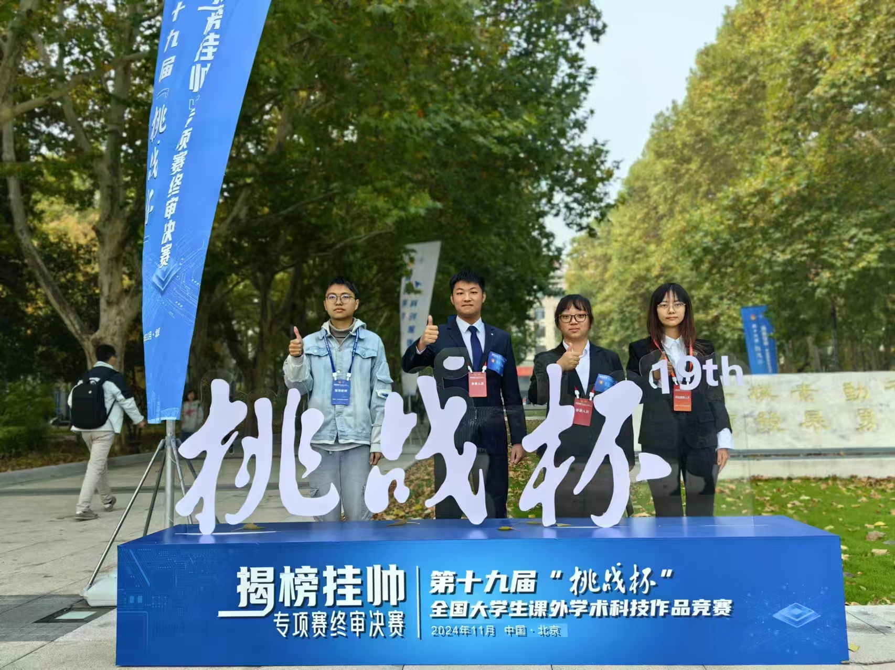

2024年11月9日，2024届“挑战杯”全国大学生课外学术科技作品竞赛在北京圆满落幕。本次大赛作为全国最具影响力的大学生科技创新竞赛之一，吸引了来自410余所高校及企业的1950余件作品入围终审决赛，竞争异常激烈。在全国顶尖高校团队的同台角逐中，多媒体智能前沿实验室（M3AIL Research Group）团队凭借项目《视护先锋》脱颖而出，荣获国家级三等奖，展现了团队在人工智能与医学健康交叉领域的创新实力。
本次获奖作品《视护先锋》，聚焦基于人工智能的近视风险预测技术，结合深度学习、医学影像分析及用户行为建模，构建了一套精准、高效、智能化的近视风险评估系统。该系统能够通过眼球受力前后的OCT影像变化，分析眼球后部生物力学属性，为视力健康管理提供科学依据。项目受到了评审专家的高度评价，认为其在医疗健康领域的智能化应用具有广阔前景和社会价值。
本项目团队由实验室大三学生阙若豪、大二学生郭昱辰等同学组成，在M3AIL实验室包俊老师、刘卜瑜老师的悉心指导下，团队成员历时180天精心打磨作品。团队在算法优化、数据处理、模型训练及应用测试等环节不断探索，克服了医学数据获取困难、模型泛化能力提升、应用可视化设计等挑战，最终形成了一套完整的研究体系，并在比赛中取得优异成绩。
本次获奖离不开包俊老师和刘卜瑜老师的全程指导，以及M3AIL实验室在计算资源、实验设备、学术交流方面的助力。这一成绩不仅彰显了实验室在人工智能与医疗健康交叉研究的创新实力，也进一步肯定了团队的科研能力。未来，团队将继续优化模型，推动成果应用，M3AIL实验室也将持续支持学生参与科技竞赛，助力培养具备创新能力和社会责任感的优秀人才。